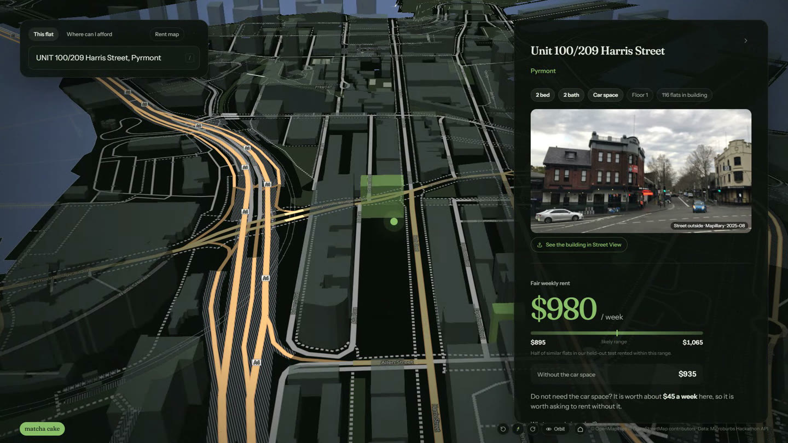
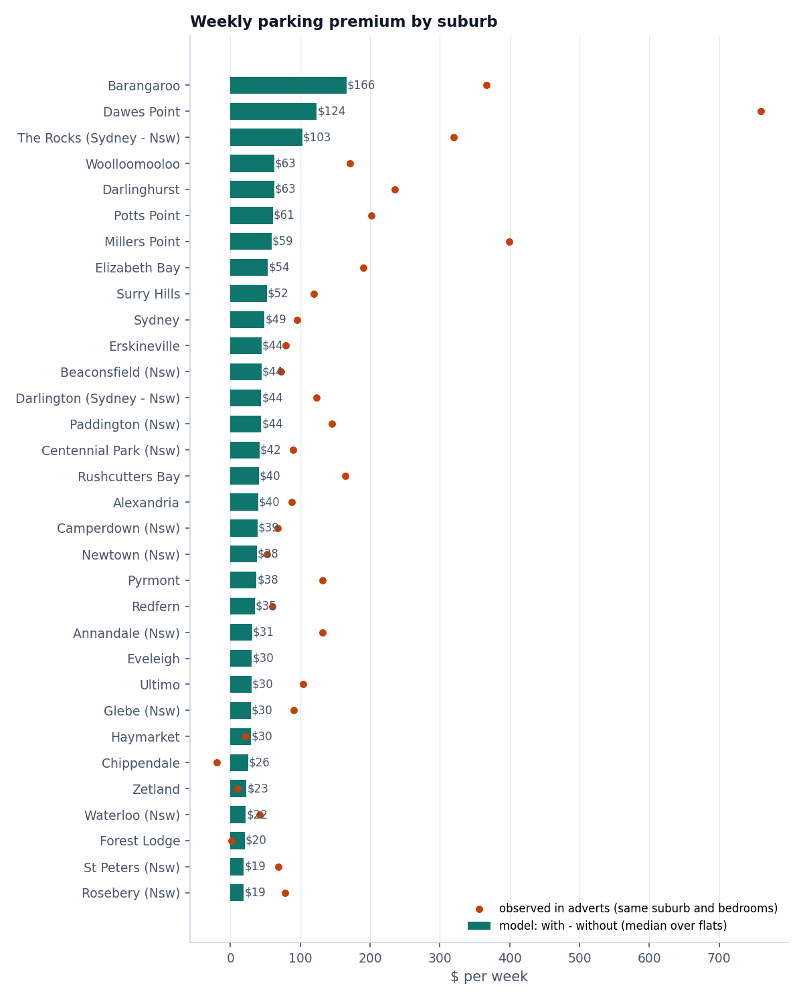
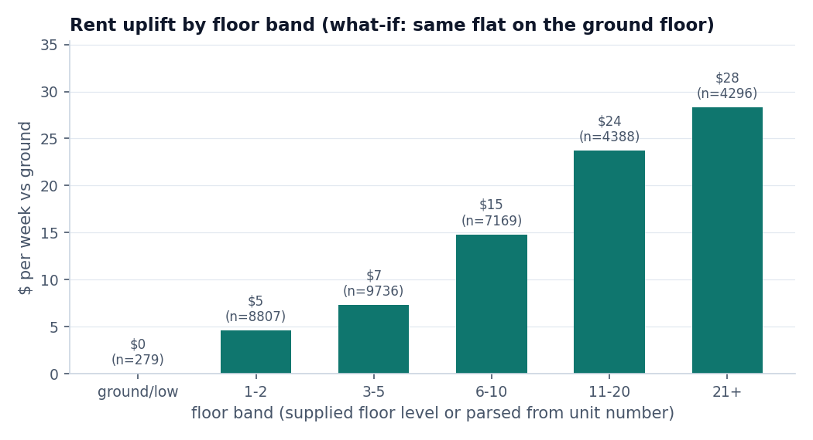
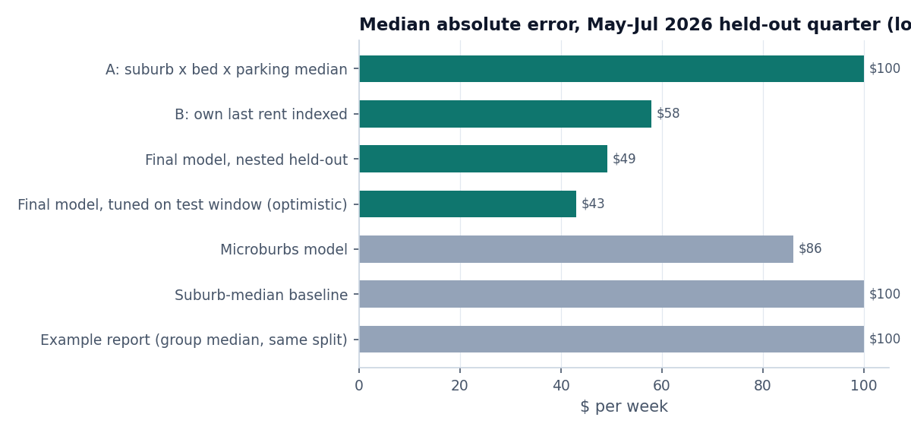
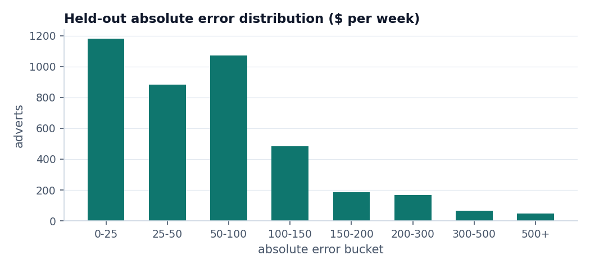
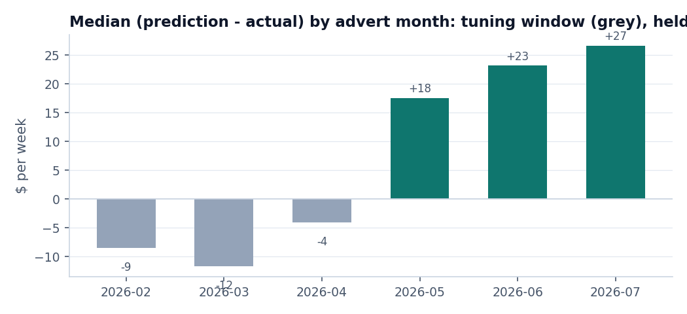

Team matcha cake - Microburbs Hackathon, Task 4. Weekly asking rent for 65,777 City of Sydney flats, with and without a car space.
Going Rate estimates the weekly asking rent of every one of the 65,777 City of Sydney flats in the brief, with and without a car space. It is built for renters: type an address, see the estimate, the likely range, how the number was built up, and the real adverts behind it.

The app: matcha-cake-rent.vercel.app. Code: app/.
A car space is worth very different amounts across the city. In older inner-east suburbs where buildings rarely have garages, it adds about 8% to the rent: $61 a week in Potts Point, $63 in Darlinghurst and Woolloomooloo. In new-tower suburbs where most flats come with one, it adds about 2%: $22 in Waterloo, $23 in Zetland, $19 in Rosebery. Barangaroo is the outlier at $166 (9%).
How it is measured: each flat is predicted twice, with and without a car space, and the premium is the gap. The model learns it from adverts with and without parking across buildings and suburbs. We also built a raw within-building comparison, but on the tuning window the model's own gap scored better, so the submitted premiums are the model's.

Full table: pipeline/out/parking_premium_by_suburb.csv.
Holding everything else fixed, the model puts a flat on floors 11-20 about $24 a week above the same flat on the ground floor, and $28 for floors 21 and up, roughly 2-3% of rent. In raw adverts the gap is even smaller, 1-3%, because high-rise flats also tend to be smaller and newer. Height matters far less than the building and the suburb.
Floor comes from the supplied floor level where present, otherwise from the unit number (1203 is floor 12).

Full table: pipeline/out/floor_premium.csv.
Same split as the Microburbs example report: train on adverts dated on or before 2026-04-30 (n=108,374), test on adverts dated 2026-05-01..2026-07-31 (n=4,083). Each test advert is scored against the prediction that matches its own parking status (midpoint when unknown).
Nested, so the headline is honest: every modelling choice (which external feature groups to keep, LightGBM depth and target, blend weight, forward adjustment, parking-gap mix, level shift, plausibility clipping) was made on an earlier window - train on adverts dated on or before 2026-01-31, tune on 2026-02-01..2026-04-30 (n=2,939) - then frozen and applied once to May-Jul 2026. The row "re-tuned on May-Jul itself" shows what the same procedure reports when the choices are made on the test window; it is optimistic and only there for transparency.

| model | median abs err $ | mean abs err $ | within $50 | within $100 | within $200 | R2 | median(pred - actual) $ |
|---|---|---|---|---|---|---|---|
| A: suburb x bedrooms x parking median (example-report method) | 100.0 | 142.5 | 34.2% | 56.7% | 81.6% | 0.635 | -20.0 |
| B: own last advertised rent, indexed | 58.0 | 111.1 | 46.0% | 68.4% | 86.8% | 0.705 | +10.0 |
| Final model: choices frozen on Feb-Apr (NESTED, headline) | 49.2 | 78.7 | 50.5% | 76.8% | 93.1% | 0.863 | +22.4 |
| Same + calendar-month factor from 2019-2026 history (submission config) | 43.0 | 74.3 | 55.5% | 79.7% | 94.0% | 0.863 | -0.1 |
| Final model: choices re-tuned on May-Jul itself (optimistic) | 43.1 | 73.8 | 55.2% | 79.8% | 94.3% | 0.863 | -1.3 |
| benchmark: Microburbs model | 86 | 55.21% | |||||
| benchmark: Suburb-median baseline | 100 | 56.39% | |||||
| benchmark: Example report (group median, same split) | 100 | 56.80% | 0.645 |
Without the frozen level shift of +0: $49.2 median, 76.8% within $100.

| segment | n | median(pred - actual) $ | median abs err $ | within $100 |
|---|---|---|---|---|
| parking = with | 2135 | +30.2 | 60.7 | 71.4% |
| parking = without | 1821 | +16.2 | 38.8 | 83.5% |
| parking = unknown | 127 | +37.7 | 60.0 | 70.1% |
| bedrooms = 0 | 357 | +32.2 | 37.8 | 92.4% |
| bedrooms = 1 | 1886 | +3.5 | 33.1 | 86.5% |
| bedrooms = 2 | 1575 | +53.4 | 72.6 | 65.7% |
| bedrooms = 3 | 265 | +6.7 | 92.4 | 52.5% |
| own advert in last 18 months = yes | 1533 | +26.9 | 39.1 | 83.2% |
| own advert in last 18 months = no | 2550 | +18.4 | 56.0 | 72.9% |
Frozen choices (made on Feb-Apr 2026): external feature groups dropped = mb, bond; LightGBM config = deep, target = raw; blend weight on the model vs the flat's own indexed last rent = decay; forward adjustment = none; parking-gap mix = 1.0 (1 = model's own gap, 0 = observed within-building/suburb premium); level shift = +0; plausibility clipping = off.
Month by month, the strictly frozen model ran high through the held-out winter: +$18 in May, +$23 in June, +$27 in July. Sydney asking rents peak in summer and soften in winter, so we added a calendar-month factor estimated only from 2019-2026 adverts before the cutoff; with it the drift disappears and the typical miss is $43. We added it after seeing the drift, so we lead with the stricter $49, and it is the main judgement call for the August-September scoring window.

| advert month | n | median(pred - actual) $ | median abs err $ | window |
|---|---|---|---|---|
| 2026-02 | 929 | -8.5 | 45.2 | tuning window |
| 2026-03 | 947 | -11.6 | 44.8 | tuning window |
| 2026-04 | 1063 | -4.0 | 45.0 | tuning window |
| 2026-05 | 1271 | +17.6 | 46.9 | held-out |
| 2026-06 | 1471 | +23.2 | 48.4 | held-out |
| 2026-07 | 1341 | +26.6 | 54.2 | held-out |
| 2026-05 | 1271 | -0.1 | 42.1 | held-out, with seasonal factor |
| 2026-06 | 1471 | +0.8 | 41.7 | held-out, with seasonal factor |
| 2026-07 | 1341 | -1.5 | 46.1 | held-out, with seasonal factor |
Parking: adverts with a car space are harder (larger, dearer flats) and the model's with-parking predictions sit +14/week relative to without-parking ones on the held-out quarter; the median predicted gap is $38/week. The gap mix was chosen on the tuning window.
| model | median abs err $ | mean abs err $ | within $50 | within $100 | within $200 | R2 | median(pred - actual) $ |
|---|---|---|---|---|---|---|---|
| A_group_median | 100.0 | 144.5 | 32.7% | 55.7% | 81.0% | 0.690 | -45.0 |
| C_all_feature_groups | 47.4 | 78.3 | 52.4% | 77.1% | 92.9% | 0.883 | -10.3 |
| C_without_mb | 47.0 | 78.4 | 52.3% | 77.2% | 93.0% | 0.884 | -9.1 |
| C_without_bond | 46.7 | 78.4 | 52.0% | 77.0% | 92.9% | 0.883 | -8.1 |
| C_without_sr | 48.1 | 78.7 | 51.4% | 77.2% | 92.9% | 0.884 | -8.4 |
| C_without_da | 47.0 | 78.6 | 52.3% | 77.3% | 92.7% | 0.883 | -8.5 |
| C_without_osm | 48.1 | 78.3 | 51.4% | 78.0% | 93.0% | 0.883 | -8.1 |
| C_base_raw | 47.1 | 79.0 | 51.8% | 77.1% | 92.9% | 0.880 | -8.6 |
| C_base_log | 47.0 | 79.2 | 52.1% | 76.9% | 92.7% | 0.879 | -8.4 |
| C_deep_raw | 46.7 | 78.4 | 52.0% | 77.0% | 92.9% | 0.883 | -8.1 |
| C_deep_log | 47.7 | 78.2 | 52.4% | 77.3% | 93.0% | 0.883 | -9.6 |
| B_last_rent | 60.0 | 112.4 | 45.5% | 67.9% | 85.5% | 0.791 | -9.0 |
| chosen_before_shift | 45.0 | 77.8 | 53.6% | 77.4% | 92.9% | 0.886 | -8.1 |
| chosen_with_shift | 45.0 | 77.8 | 53.6% | 77.4% | 92.9% | 0.886 | -8.1 |
| chosen_with_shift_and_clipping | 45.1 | 77.7 | 53.5% | 77.3% | 92.9% | 0.887 | -7.7 |
Outputs: rents_matcha-cake.csv (scored), app/private/predictions.csv (app, not committed), pipeline/out/holdout.json, pipeline/out/holdout.md.